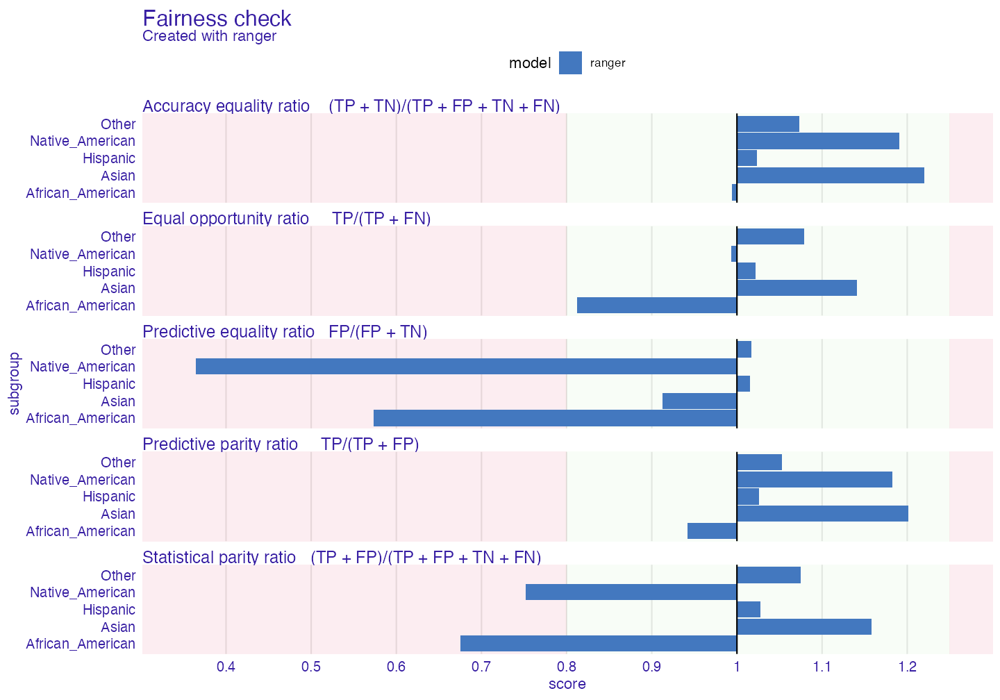
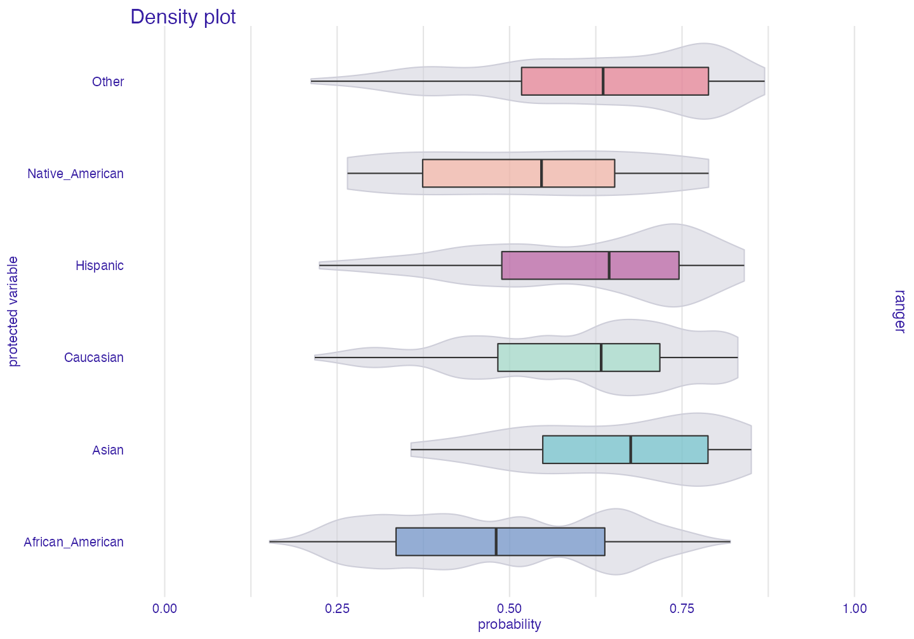
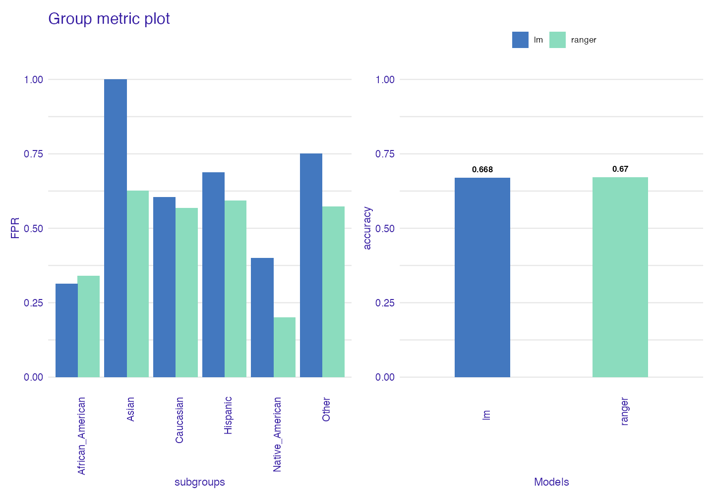

fairmodels
In this tutorial you will get to know when, why and how to use fairmodels. fairmodels is a tool for bias detection, visualization and mitigation. It is compatible with DALEX and DALEXtra which are model agnostic explainers. Some knowledge of how to use those explainers will be needed but in this tutorial you should grasp the idea.
For this tutorial we will use compas data to see if someone will become recidivist in next 2 years.
Why?
Let’s say you are building algorithm for court system that predicts if someone will become recidivist in the future. First you gather information then you build a model and predict outcomes. You get satisfying accuracy. It is pretty good, but it appears that the model is more likely to say that African Americans will become recidivists. It was trained on data that where discrimination of certain ethnic groups was visible. Racist algorithms are no good for the court system. So now we have some options. First one is to gather more reliable data, and the second one is trying to understand bias and choose model with least amount of it. We will choose the second option.
Data
We will use modified ProPublica’s compas data to represent our problem.
library(fairmodels) data("compas") head(compas)
#> Two_yr_Recidivism Number_of_Priors Age_Above_FourtyFive Age_Below_TwentyFive
#> 1 0 0 1 0
#> 2 1 0 0 0
#> 3 1 4 0 1
#> 4 0 0 0 0
#> 5 1 14 0 0
#> 6 0 3 0 0
#> Misdemeanor Ethnicity Sex
#> 1 0 Other Male
#> 2 0 African_American Male
#> 3 0 African_American Male
#> 4 1 Other Male
#> 5 0 Caucasian Male
#> 6 0 Other MaleFor fairmodels package to work properly we want to flip factor levels in target variable, so positive outcome (not being a recidivist) is being predicted by models. It is only needed for one specific function but more on it later.
Basic features
We train a ranger model and create an explainer with DALEX.
library(DALEX) library(ranger) # train rf_compas <- ranger(Two_yr_Recidivism ~., data = compas, probability = TRUE) # numeric target values y_numeric <- as.numeric(compas$Two_yr_Recidivism)-1 # explainer rf_explainer <- explain(rf_compas, data = compas[,-1], y = y_numeric, colorize = FALSE)
#> Preparation of a new explainer is initiated
#> -> model label : ranger ( default )
#> -> data : 6172 rows 6 cols
#> -> target variable : 6172 values
#> -> predict function : yhat.ranger will be used ( default )
#> -> predicted values : numerical, min = 0.153834 , mean = 0.5451892 , max = 0.8589317
#> -> model_info : package ranger , ver. 0.12.1 , task classification ( default )
#> -> residual function : difference between y and yhat ( default )
#> -> residuals : numerical, min = -0.8471171 , mean = -0.0003090514 , max = 0.7785729
#> A new explainer has been created!fairness check
Than we create call function fairness_check() This function aggregates many explainers so you may compare many models. We assign object to name fobject which is short version of fairness_object - object returned by fairness_check(),
fobject <- fairness_check(rf_explainer, # explainer protected = compas$Ethnicity, # protected variable as factor privileged = "Caucasian", # level in protected variable, potentially more privileged cutoff = 0.5, # cutoff - optional, default = 0.5 colorize = FALSE)
#> Creating fairness object
#> -> Privileged subgroup : character ( Ok )
#> -> Protected variable : factor ( Ok )
#> -> Cutoff values for explainers : 0.5 ( for all subgroups )
#> -> Fairness objects : 0 objects
#> -> Checking explainers : 1 in total ( compatible )
#> -> Metric calculation : 10/12 metrics calculated for all models ( 2 NA created )
#> Fairness object created succesfullyLet’s see if our ranger model has bias.
print(fobject, colorize = FALSE)
#>
#> Fairness check for models: ranger
#>
#> ranger passes 2/5 metrics
#> Total loss: 3.698016plot(fobject)

Of course the protected parameter can be changed, for example to (here binary) compas$Sex.
In many metrics ranger exceeds fairness threshold (which can be changed by epsilon parameter). If bars reach red field on the left it means that there is bias towards certain unprivileged subgroup. If they reach one on the right it means bias towards privileged (Caucasian - in all metrics here Caucasian subgroup is referenced as base - 1) subgroup. This values mean the proportion (ratio) of certain unprivileged subgroup to privileged subgroup (eg. Asian/Caucasian). By default it represents 80% rule (for eg. women should get credit at rate at least 80% of that of men) . Metrics measure how equal treatment and mistreatment among subgroups is. More on those metrics: wikipedia
Why do we have this bias? Model did learn from biased data. We can see it on plot below
plot density
plot_density(fobject)

As we can see it is more likely that model will categorize African Americans as not being recidivists than for example Asians.
Metric scores plot
Sometimes it is worth it to see what the raw (unscaled) metrics are. User could use fobject$group_data but the easier way is to plot metric_scores object.
plot(metric_scores(fobject))

fairness object - idea
To really see what fairness_object is about, we need to make some more models and explainers.
library(gbm) rf_compas_1 <- ranger(Two_yr_Recidivism ~Number_of_Priors+Age_Below_TwentyFive, data = compas, probability = TRUE) lr_compas_1 <- glm(Two_yr_Recidivism~., data=compas, family=binomial(link="logit")) rf_compas_2 <- ranger(Two_yr_Recidivism ~., data = compas, probability = TRUE) rf_compas_3 <- ranger(Two_yr_Recidivism ~ Age_Above_FourtyFive+Misdemeanor, data = compas, probability = TRUE) df <- compas df$Two_yr_Recidivism <- as.numeric(compas$Two_yr_Recidivism)-1 gbm_compas_1<- gbm(Two_yr_Recidivism~., data = df) explainer_1 <- explain(rf_compas_1, data = compas[,-1], y = y_numeric) explainer_2 <- explain(lr_compas_1, data = compas[,-1], y = y_numeric) explainer_3 <- explain(rf_compas_2, data = compas[,-1], y = y_numeric, label = "ranger_2") explainer_4 <- explain(rf_compas_3, data = compas[,-1], y = y_numeric, label = "ranger_3") explainer_5 <- explain(gbm_compas_1, data = compas[,-1], y = y_numeric)
Now we create one object with all explainers
fobject <- fairness_check(explainer_1, explainer_2, explainer_3, explainer_4, explainer_5, protected = compas$Ethnicity, privileged = "Caucasian", verbose = FALSE)
As we can see there is some parameters in fairness_check such as:
1. x, … - list of DALEX explainers, and other fairness_object objects
2. protected - factor, containing subgroups as levels. Protected stands for protected variable (or sensitive attribute)
3. privileged - character, level in protected, it is subgroup suspected of having better results
4. cutoff - numeric, vector of cutoffs values matching the order of levels in protected variable. It affects only explainers so if fairness_object is passed it’s cutoff vector won’t be changed.
5. label - character, vector of labels for explainers only. Very convenient for fairness_check() iterative approach - having explainer, checking for bias, mitigating bias, passing both explainer and fairness object and comparing fairness.
6. epsilon - numeric, boundary position in fairness_check(). Fairness metrics are satisfied if parity loss values are between (-epsilon, epsilon)
What consists of fairness object?
fairness_object is output value of fairness_check() It is S3 object consisting of: * Parity loss metrics Popular confusion matrix metrics with parity loss - sum of absolute logarithms of ratios of unprivileged subgroups and privileged one (more on that in documentation ?fairness_check. If model would have 0 in certain parity loss metric it would mean that it treats all subgroups equally.
fobject$parity_loss_metric_data
#> TPR TNR PPV NPV FNR FPR FDR
#> 1 0.3976902 1.2511537 0.4859671 0.7339807 1.6654218 1.7041164 1.3910955
#> 2 0.5471779 NA 0.1630229 NA 3.2047184 1.9228318 0.3724644
#> 3 0.5253299 1.2253772 0.4568264 0.6307265 2.7444036 1.8958208 1.4871686
#> 4 0.6611125 0.7401031 0.7674172 0.8209521 0.8762755 0.8532876 1.4329174
#> 5 0.6323438 2.4596961 0.3324256 0.9196980 2.5885754 2.1829739 0.8838782
#> FOR TS STP ACC F1
#> 1 1.3892629 0.7150599 0.8731178 0.4174524 0.4430506
#> 2 1.7116794 0.5362121 1.1034842 0.1969839 0.3361082
#> 3 1.5532640 0.7941818 1.0316250 0.4632349 0.4853351
#> 4 0.6729784 0.8970468 0.5742171 0.3638060 0.6304323
#> 5 1.1090437 0.5307139 1.2196301 0.2367140 0.3318572- groups_data
Fairness object gets metrics based on confusion matrix and checks them over the groups.
# for the first model fobject$groups_data$ranger$TPR
#> African_American Asian Caucasian Hispanic
#> 0.6697490 0.8695652 0.8149883 0.8406250
#> Native_American Other
#> 0.8333333 0.8858447It is simply metrics for certain subgroup.
What is relation between $groups_data and $parity_loss_metric_data ?
If we were going only to take score from certain metric (Let’s say fpr and 0.3) we wouldn’t know if it is good or bad. But we are aiming for equal treatment over all groups so if this metric score would be the same in all groups it would be very good. But the metrics wouldn’t be comparable between each others (fpr - 0.3 in all groups and accuracy - 0.9 in all groups, both are good in terms of parity). That is why we use privileged - to set benchmark. And for example Caucasian in fpr had score of 0.3 and African American 0.6. After setting privilieged = Caucasian Caucasian would have score 0, and African American log(0.6/0.3). It enables comparing and adding scores.
Note: When dealing with plots we use formula sum(abs(log(Mu/Mp))) for all unprivileged metrics (Mu - metric unprivileged, Mp - metric privileged) to represent aggregated score in subgroups. In short is how much it differs from ideal scores. The closer to zero the better
group_confusion_matrices Similarly to groups data it stores confusion matrix for each subgroup
explainers
list of DALEX explainers
- cutoff
# for first model fobject$cutoff$ranger
#> $African_American
#> [1] 0.5
#>
#> $Asian
#> [1] 0.5
#>
#> $Caucasian
#> [1] 0.5
#>
#> $Hispanic
#> [1] 0.5
#>
#> $Native_American
#> [1] 0.5
#>
#> $Other
#> [1] 0.5list of cutoff values for each model
fairness_check_data data used in print and plot of
fairness_object. It is already processed data and ready to plot. If someone were to useabs()metrics there would be equal to particular metrics in$parity_loss_metric_data. It means that it allows negative values. So when value is negative it means that score of privileged group in this metric was better.… - other parameters passed to
fairness_check()
Choosing best model
We now have a few models in our fairness_object
Let’s see how they perform in different metrics.
Stacked Barplot
sm <- stack_metrics(fobject) plot(sm)

It displays accumulated (Stacked) metric scores for each model. The least metric score the better.

Plot fairness PCA
With this task we should use PCA. We call create_fairness_pca() to create fairness pca object.
fair_pca <- fairness_pca(fobject) print(fair_pca)
#> Fairness PCA :
#> PC1 PC2 PC3 PC4 PC5
#> [1,] -0.6353903 -1.5222085 0.5883554 0.7776400 6.418477e-17
#> [2,] 2.9208379 0.5673663 0.8664566 -0.5087595 3.330669e-15
#> [3,] -0.2641765 -1.4908014 -0.7680243 -0.6902764 -2.498002e-16
#> [4,] -3.9163252 1.3168721 0.1821148 -0.1719362 1.110223e-15
#> [5,] 1.8950540 1.1287715 -0.8689024 0.5933320 -2.553513e-15
#>
#> Created with:
#> [1] "ranger" "lm" "ranger_2" "ranger_3" "gbm"
#>
#> First two components explained 90 % of variance.Let’s plot!
plot(fair_pca)

Plot Heatmap
Another way to deal with grouped data is using heatmap.
fheatmap <- fairness_heatmap(fobject) plot(fheatmap, text_size = 3)

For both models and metrics dendograms are created. This way through hierarchical clustering we can look on similarities between models/metrics. It should give similar but more detailed information than PCA Now we know what those scores are and how “similar” models are to each other
Metric and Performance Plot
Sometimes we would like to know how good are models in performance metrics and in fairness metrics at the same time, to see the tradeoff between them.
fap <- performance_and_fairness(fobject, fairness_metric = "STP")
#> Performace metric is NULL, setting deafult ( accuracy )
#>
#> Creating object with:
#> Fairness metric: STP
#> Performance metric: accuracyplot(fap)

Group Metric
When we have narrowed down our search for the best model we can use group_metric to check once again metrics within groups and decide which model to use.
fobject2 <- fairness_check(explainer_1,explainer_2, protected = compas$Ethnicity, privileged = "Caucasian", verbose = FALSE) gm <- group_metric(fobject2, fairness_metric = "FPR")
#> Performace metric not given, setting deafult ( accuracy )
#>
#> Creating object with:
#> Fairness metric: FPR
#> Performance metric: accuracyplot(gm)

Custom cutoff
We may see how cutoff affects parity loss of metrics
All cutoffs
All cutoffs measures where metrics exist (are not NA) and how they change if we modify cutoffs in all subgroups.
In this plot NA values are natural, so warnings are to be expected.
ac <- all_cutoffs(fobject2) plot(ac)

Ceteris paribus cutoff
This function shows how parity loss metrics would change if we modified cutoff only for one subgroup (here African American) with other cutoffs fixed.
cpc <- ceteris_paribus_cutoff(fobject2, subgroup = "African_American") plot(cpc)

Summary
fairmodels is powerful and flexible tool for detecting bias and asserting fairness in models. Many metrics are available (there are tools to create own metrics based on confusion matrix). Besides bias detection fairmodels offers also bias mitigation. It is set of pre-processing and post-processing algorithms working either on data or on explainer which function is to lower parity loss in certain metrics. If you are interested in this and adult data case study, please check Advanced Tutorial. If you encountered a bug or you have cool idea for a new feature please write and issue here.